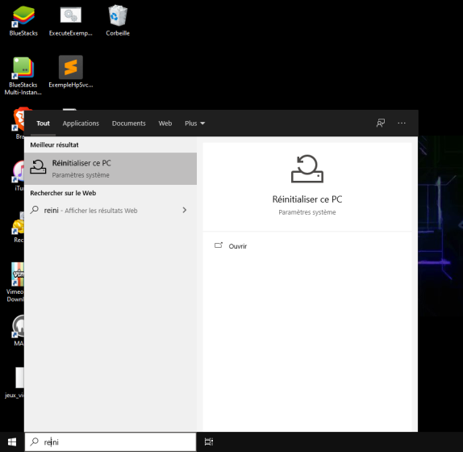

Depuis quelque temps votre ordinateur plante ou il est lent
vous avez déjà tout essayé (analyse anti-virus, analyse ccleaner etc) mais votre ordinateur ne veux rien savoir ?
tout d'abord, vous perdrez tout vos programmes et logiciels vous devrez les réinstaller ensuite.
si la réponses à ces deux questions est oui alors il faut réinitialiser windows 10 pour cela :
chercher l'option réinitialiser ce pc dans la barre de rechercher windows:
